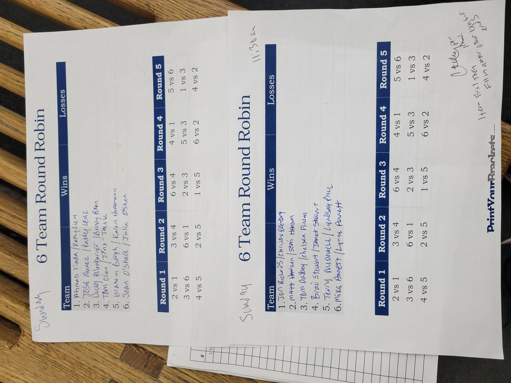

Small informal tournaments often work well, but they place a lot of responsibility on the tournament director.
Common challenges include:
PB Tourney is a tournament management application designed specifically for live execution of small, local pickleball tournaments. It is designed primarily with the goal of reducing operational load on tournament directors by addressing the following needs.
Player needs:
Tournament Director needs:
As you review PB Tourney, think about it from the perspective of someone running or playing in a real tournament.
Consider whether the problems described here match your experience, whether the objectives focus on what actually matters during live play, and whether this approach would meaningfully improve tournament flow. Feedback of all kinds is welcome — including ideas about features, usability, and polish — especially when tied back to real tournament needs.
PB Tourney will be released as both a web application and a mobile application (iOS and Android). The mobile application will focus initially on the player experience providing convenient access to score reporting, matches, and standings. I haven't decided any details beyond that I will release version 1 in these formats. Please share any ideas/feedback you have in this area as well if they occur to you.
Thank you for taking the time to review PB Tourney. Your perspective as a player or director is essential in determining whether this project is solving the right problems in the right way.